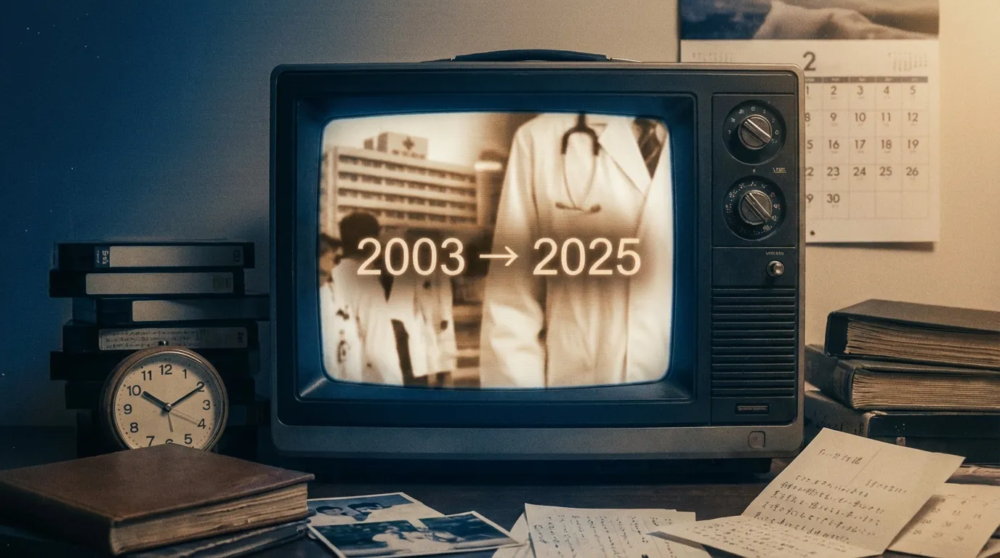
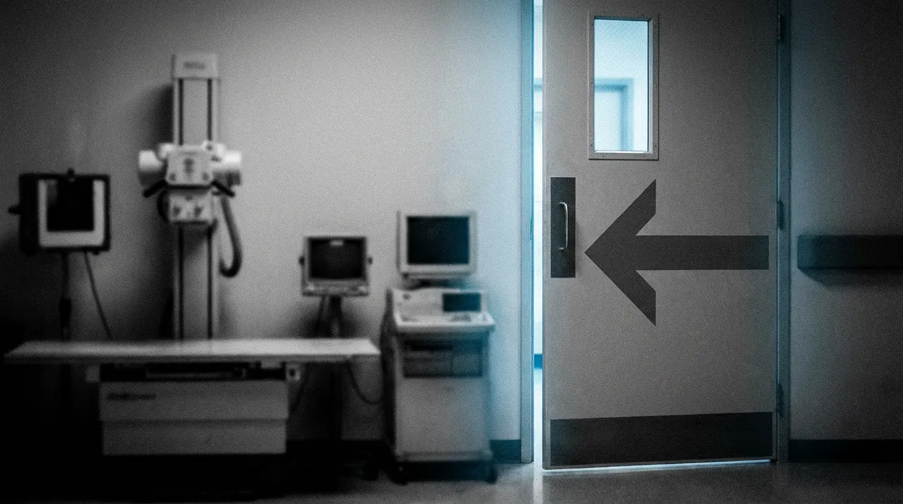
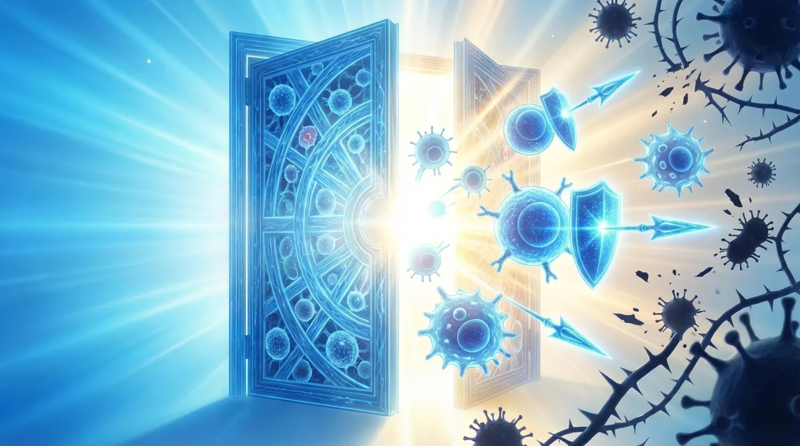
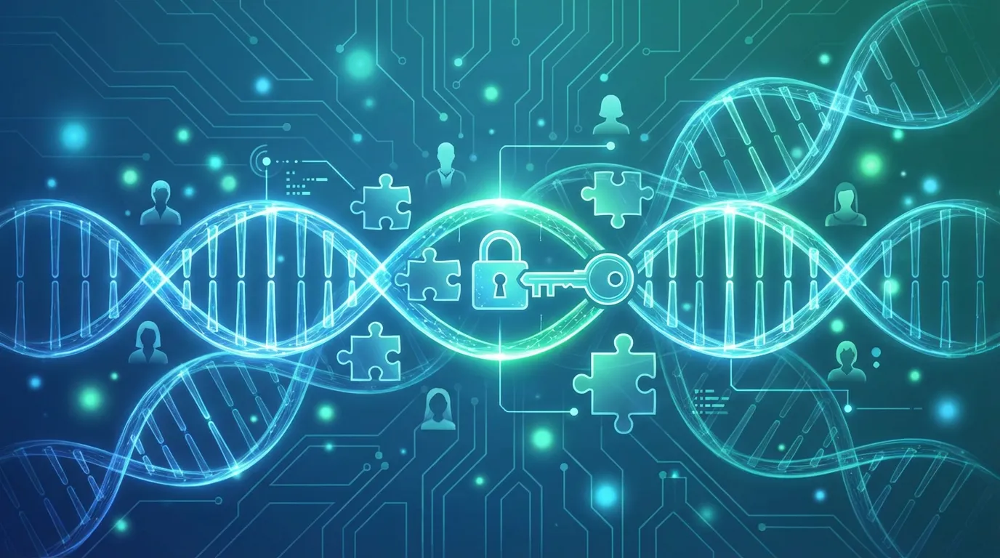

プロローグ：記憶の中の財前五郎
2003年、私は高校生でした。
毎週木曜日の夜10時、テレビの前に座って、ビデオデッキの録画ボタンを押していました。『白い巨塔』が始まります。唐沢寿明さんが演じる財前五郎の圧倒的な存在感、手術室での鋭い眼差し、そして大学病院という巨大な権力構造。「こんな世界があるんだ」と思いました。怖かったです。でも、強烈に惹かれていました。
何度も録画を見返しました。特に最終回近くのシーンが忘れられません。
周囲の医師たちは「手術は成功した。安心していい」と財前に告げます。でも、がん専門医である財前は、自分の身体の異常に気づいていました。誰よりも、自分の死が近いことを理解していました。
そして、かつてのライバルだった里見を訪ねます。里見だけには、本音を語りました。
「無念だ」
その言葉に込められた、医師としての絶望。まだやり残したことがある。まだ救いたい患者がいる。でも、自分の身体はもう言うことを聞かない。
財前五郎は野心家でした。権力を求めました。でも、その根底には「医師として患者を救いたい」という純粋な想いがあったんだと、私は信じています。ただ、彼はその医療界の渦に巻き込まれて、気づいたときには自分自身が病に蝕まれていました。
18歳の私にとって、がんは「死の宣告」以外の何物でもありませんでした。どんなに優秀な医師でも、自分の癌は治せない。そういう病気でした。
それから22年。私は40歳になりました。
結婚して、2歳になる娘がいます。家族のために、健康でいたいと毎日考えています。そして、この22年の間に、私は大切な人たちを癌で失ってきました。
8年前、よく遊んでくれた叔父が亡くなりました。
病気だと親から聞かされたのは、最後の方でした。少し遠くに住んでいたので、「月末に会いに行こう」と思っていました。でも、その前週に亡くなりました。今でも後悔しています。すぐにでも会いに行けば良かった。
昨年、妻の父が白血病で亡くなりました。
急性白血病でした。診断から2ヶ月でした。叔父のときの記憶が蘇りました。妻に同じ後悔をさせたくありませんでした。だから、毎週末、病院に会いに行きました。
抗がん剤の影響で、義父の記憶が一時的に飛ぶことがありました。妻のことがわからなくなるときもありました。それでも、娘を連れて病室を訪れた週末、義父は初孫の顔を見て、少しだけ笑いました。それが救いでした。
娘が生まれてから、私は新しい恐怖を知りました。「2人に1人が、生涯のうちに癌になる」という統計です。自分や妻のこともそうですが、何よりも娘が、小児がんにでもなったらと考えてしまうと、心が痛みます。
先日、Netflixで『白い巨塔』を再視聴しました。
22年ぶりに見る財前五郎。でも、何かが違いました。違和感がありました。
「あれ、患者への説明、こんなに少なかったっけ？」「治療の選択肢、他にもあるんじゃないの？」「患者本人の意思は？家族の同意だけで手術を決めていいの？」
ドラマだから演出や誇張はあるでしょう。でも、当時は気づきませんでした。「医師たちの言うことが絶対」という空気。患者は、ただ黙って医師の判断に従う存在として描かれていました。
そして、財前自身も、周囲から真実を隠されました。「手術は成功した」という嘘。医師である彼が、患者としては情報を遮断される側になった皮肉。
18歳の私は、それを当然だと思っていました。40歳になった私は、それに疑問を感じました。
この22年で、何が変わったのでしょう？
叔父や義父が受けた治療は、2003年の財前五郎の時代と、どう違ったのでしょう？もし、今の医療が当時あったなら、彼らはもう少し長く生きられたのでしょうか？
そんな疑問から、私は調べ始めました。2003年と2025年、この22年間で、癌という病気への向き合い方、治療法、そして医療そのものがどう変わったのかを。
これは、医療の素人である私が知った、癌治療の革命の物語です。
そして、失った人々への想いと、娘の未来への希望を込めた記録でもあります。
第1章：2003年の医療風景──財前五郎が生きた世界
当時のがん医療の実態──告知の曖昧さ、限られた治療法、医師と患者の関係性──を振り返ります。それは、私たちが22年間で、どれだけ遠くまで来たのかを知るための、出発点です。
がん告知という「変化の時代」
『白い巨塔』を再視聴して、気づいたことがあります。
ドラマの中では、患者本人への説明シーンもありました。「インフォームドコンセント（説明と同意）」です。でも、その説明の内容や、患者が本当に理解して選択できているのか、という点では、今とは違う印象を受けました。
特に印象的だったのが、佐々木庸平さんという患者のケースです。手術の説明はされていましたが、他にどんな選択肢があるのか、手術をしなかったらどうなるのか、といった詳しい情報は十分に伝えられていないように見えました。患者は「先生にお任せします」と言うしかない雰囲気がありました。
調べてわかったのですが、2000年代初頭は、まさに「がん告知の過渡期」だったそうです。
1990年代まで、がんの告知率は20〜30％程度しかありませんでした。でも、2000年代に入って、インフォームドコンセントの概念が広がり始め、告知率は50〜60％まで上がっていました。つまり、2003年は「告知する」「しない」が医師や病院によってバラバラだった時代だったのです。
特に高齢者の場合、「本人には言わないでください」という家族の要請を、医師が受け入れることもまだ一般的でした。「患者さんのショックを和らげるため」「希望を奪わないため」という理由で、真実が隠されることがありました。
当時は、これが「患者のため」だと信じられていたのです。
限られた治療の選択肢
2003年当時、がん治療の選択肢は基本的に3つしかありませんでした。
- 手術：がんを切り取る。財前五郎が得意とした方法です。ただし、がんが進行していると手術できないことも多く、体への負担も大きいものでした。
- 放射線治療：がんに放射線を当てて、がん細胞を殺す方法。でも、周囲の正常な細胞も傷つけてしまうという問題がありました。
- 化学療法（抗がん剤）：薬でがん細胞を攻撃する方法。でも、正常な細胞も攻撃してしまうため、激しい吐き気、脱毛、体力の低下など、つらい副作用が伴いました。
「がん治療＝苦しい」というイメージは、この時代の記憶から来ているのかもしれません。
2002年に、「イレッサ」という新しいタイプの薬が承認されました。「夢の新薬」「副作用が少ない画期的な治療薬」と報道されて、大きな期待が集まりました。
でも、実際には間質性肺炎という重い副作用が発生して、多くの患者さんが亡くなりました。薬害訴訟にも発展。2003年は、新しい治療への希望と、その失望が交錯した時代だったのです。
「医師の判断」と「患者の選択」の狭間
『白い巨塔』で描かれた医療訴訟のシーンを見て、考えさせられました。
財前は患者や家族に手術の説明はしていました。でも、裁判では「説明が不十分だった」「他の選択肢を示さなかった」「リスクの説明が足りなかった」という点が問題になりました。
つまり、「説明した」ことと、「患者が本当に理解して選択できた」ことの間には、大きなギャップがあったのです。
当時の医療現場では、形式的には患者の同意を取っていても、実質的には医師の判断に従うことが期待されていた面がありました。患者が「他の治療法はないんですか？」と質問することは、まだ一般的ではありませんでした。セカンドオピニオン（他の医師の意見を聞くこと）という言葉も、ようやく知られ始めた頃でした。
そして、医師である財前自身も、患者の立場になったとき、周囲から真実を隠されました。「手術は成功した」という嘘をつかれて、本当の病状を知らされませんでした。
医師としての知識があったからこそ、財前は自分の身体の異変に気づきました。でも、もし普通の患者だったら？真実を知らないまま、最期を迎えていたかもしれません。
2003年の医療が抱えていた課題
この時代の医療を整理すると、こんな特徴がありました：
- がん告知が医師や病院によってバラバラ
- 患者への情報開示が、今ほど詳しくない
- 治療の選択肢が限られている
- 形式的な同意はあっても、患者の主体的な選択は難しい状況
- がん＝死の病気、という認識が強い
- 治療は「延命」よりも「苦痛との戦い」というイメージ
もちろん、当時の医師たちが悪かったわけではありません。彼らは、その時代の最善を尽くしていました。でも、医療の限界が、今よりもずっと近くにあったのです。
第2章：免疫療法という革命──がん治療のパラダイムシフト
私の義父が急性白血病と診断されたとき、「数ヶ月しかないなんて」と絶望しました。
でも、調べていくうちにわかったのです。この22年で、医療は信じられないほど進化していた、ということを。
この章では、その革命的な変化について、お話しします。
2018年、ノーベル賞が証明した「奇跡」
2018年10月、日本中が沸きました。
京都大学の本庶佑（ほんじょ・たすく）教授が、ノーベル医学生理学賞を受賞したのです。受賞理由は「PD-1の発見と、がん免疫療法への貢献」でした。
正直に言うと、当時の私にはこの意味がよくわかりませんでした。「PD-1って何？」「免疫療法って、何が革命的なの？」
でも、調べていくうちに、これがどれほど画期的なことだったのかが理解できました。
従来の抗がん剤は、簡単に言えば「毒でがん細胞を殺す」という方法でした。がん細胞は増殖が速いので、増殖が速い細胞を攻撃する薬を使います。でも、髪の毛や胃腸の細胞も増殖が速いため、これらも攻撃されてしまいます。だから、脱毛や吐き気という副作用が出るのです。
本庶先生が発見したのは、全く違うアプローチでした。
「患者自身の免疫システムを使って、がんを攻撃する」
これが、免疫チェックポイント阻害薬と呼ばれる新しい治療法です。
私たちの体には「ブレーキ」がある
私たちの体には、もともと「免疫」という防御システムがあります。ウイルスや細菌を攻撃する、あの免疫です。
実は、この免疫システムは、がん細胞も攻撃しているのです。毎日、私たちの体の中では、何千個ものがん細胞が生まれていますが、免疫システムがそれらを見つけて退治してくれています。
「じゃあ、なぜがんになるの？」と思いますよね。
実は、がん細胞は賢いのです。がん細胞は、免疫システムに「攻撃しないで！」という信号を送って、免疫から逃れる方法を身につけていました。
本庶先生が発見した「PD-1」は、この「ブレーキ」の仕組みの一つでした。がん細胞がこのブレーキを押すと、免疫細胞は攻撃を止めてしまうのです。
「それなら、ブレーキを外せばいいじゃないか」
これが、免疫チェックポイント阻害薬の発想です。
オプジーボの衝撃
本庶先生の発見をもとに開発されたのが、「オプジーボ（ニボルマブ）」という薬です。
2014年7月、世界に先駆けて日本で承認されました。最初は悪性黒色腫（メラノーマ）という皮膚がんに対してでしたが、その効果は驚くべきものでした。
従来の治療では、進行した悪性黒色腫の5年生存率は約10％でした。つまり、10人中9人は5年以内に亡くなっていました。
でも、オプジーボを使うと、5年生存率が約34％まで上がったのです。10人中3人以上が、5年後も生きている。これは、奇跡と言ってもいい数字でした。
その後、オプジーボは次々と適応が拡大されました。
- 2015年12月：非小細胞肺がん
- 2016年8月：腎細胞がん
- 2017年3月：頭頸部がん
- 2017年9月：胃がん
現在では、十数種類のがんに使えるようになっています。
すべての患者に効くわけではない、という現実
ただし、正直に言わなければならないことがあります。
オプジーボは、すべての患者さんに効くわけではありません。効果がある人は、約20〜30％程度と言われています。
でも、効果がある患者さんには、本当に劇的な効果があります。がんが完全に消えてしまう人もいます。進行がんで余命数ヶ月と言われた人が、何年も元気に過ごしているケースもあります。
問題は、「誰に効くのか」を事前に見極めることが難しいことでした。
そこで重要になったのが「バイオマーカー」という考え方です。がん細胞の特徴を調べて、オプジーボが効きやすいかどうかを予測する検査が開発されました。例えば、「PD-L1」というタンパク質の量を測る検査などです。
完璧ではありませんが、少しずつ「この患者さんには効きそうだ」という予測ができるようになってきています。
CAR-T細胞療法──もう一つの革命
免疫療法には、もう一つの革命的な治療法があります。
「CAR-T（カーティー）細胞療法」です。
2019年3月、「キムリア」という名前で日本で初めて承認されました。対象は、白血病や悪性リンパ腫といった血液のがんです。
私の義父は急性白血病で亡くなりました。診断から2ヶ月でした。もし、義父の病気がCAR-T療法の対象だったら、と考えずにはいられません。
CAR-T療法は、こんな仕組みです：
- 患者さん自身の血液から「T細胞」（免疫細胞の一種）を取り出す
- その細胞を体外で遺伝子改変して、がん細胞を攻撃するように「再教育」する
- 改変した細胞を、患者さんの体内に戻す
- 戻された細胞が、体の中でがん細胞を探して攻撃する
つまり、患者さん自身の細胞が、「がん専門の戦闘部隊」に生まれ変わるのです。
効果は驚異的です。従来の治療では治らなかった白血病の患者さんの約8割が、CAR-T療法で寛解（病気が検出されない状態）に達したという報告もあります。
ただし、課題もあります。
まず、治療費が非常に高額です。1回の治療で3000万円以上かかります（保険適用はされますが、高額療養費制度を使っても自己負担は大きいです）。
また、「サイトカイン放出症候群」という重い副作用が起きることがあります。免疫細胞が一気に活性化しすぎて、高熱や血圧低下など、命に関わる状態になることがあるのです。
それでも、「治らない」と言われた患者さんに希望を与える治療法であることは間違いありません。
現在、日本では5種類のCAR-T療法が承認されています。
光免疫療法──「第5の治療法」
2020年9月、また新しい治療法が登場しました。
「光免疫療法」です。世界で初めて、日本で承認されました。
現在は頭頸部がん（喉や舌のがん）にのみ使えますが、「第5の治療法」として注目されています。
仕組みはこうです：
- がん細胞にくっつく特殊な薬剤を患者さんに投与する
- 数日後、その薬剤ががん細胞に集まったところで、特定の光（近赤外線）を照射する
- 光に反応した薬剤が、がん細胞だけを破壊する
正常な細胞は傷つけずに、がん細胞だけをピンポイントで攻撃できる──これが光免疫療法の最大の特徴です。
まだ使える範囲は限られていますが、将来的には他のがんにも応用できる可能性があります。
2003年との違い
ここで、2003年と比較してみましょう。
2003年：手術、放射線、抗がん剤の3つだけ。どれも「がん細胞を直接攻撃する」方法。
2025年：それに加えて、免疫チェックポイント阻害薬、CAR-T療法、光免疫療法など、「患者自身の免疫を利用する」方法が登場。
この違いは、単なる治療法の追加ではありません。がん治療の「考え方」が根本から変わったのです。
「がんを外から攻撃する」から、「体の中からがんと戦う力を引き出す」へ。
これが、免疫療法という革命でした。
私の義父が亡くなったのは昨年です。もし診断がもう少し違っていたら、もし病気の種類が違っていたら、CAR-T療法という選択肢があったかもしれません。
「もし」を考えても仕方ないことはわかっています。でも、この22年で、確実に「助かる命」は増えているのです。
そして、これからも増え続けるでしょう。
第3章：一人ひとりに最適化された治療──プレシジョンメディシンの時代
この章では、もう一つの革命的な変化、「一人ひとりに合わせた治療」についてお話しします。
「肺がん」という病気は存在しない？
突然ですが、驚くべき事実をお伝えします。
医学の世界では今、「肺がん」とか「胃がん」という分類の仕方が、古くなりつつあるのです。
「え？肺にできたがんが肺がんじゃないの？」と思いますよね。私も最初はそう思いました。
でも、現在の最先端のがん医療では、こう考えるようになっています。
「同じ肺がんでも、患者さんによってがん細胞の『性格』が全然違う。だから、同じ治療をしても効く人と効かない人がいる。むしろ、肺にできたがんと胃にできたがんが、遺伝子レベルでは同じ『性格』を持っていることもある」
これが、「プレシジョンメディシン（精密医療）」という考え方です。
がんゲノム医療とは何か
2019年6月、日本のがん医療に大きな転換点が訪れました。
「がん遺伝子パネル検査」が保険適用になったのです。
この検査、何をするのかというと──
患者さんのがん細胞を採取して、その遺伝子を詳しく調べます。一度に100個以上の遺伝子を調べられます。そして、そのがん細胞にどんな「異常」があるのかを特定するのです。
例えば、肺がんの患者さんAさんの検査をしたら、「EGFR遺伝子に変異がある」とわかったとします。
実は、この「EGFR変異」に効く薬があるのです。「タグリッソ」という薬です。
同じ肺がんでも、EGFR変異がない患者さんBさんには、タグリッソは効きません。でも、Bさんには「ALK融合遺伝子」という別の異常が見つかって、「アレセンサ」という薬が効くかもしれません。
つまり、「肺がん」という大きなくくりではなく、「この患者さんのがん細胞の遺伝子の特徴」に合わせて、薬を選ぶ時代になったのです。
これを「がんゲノム医療」と呼びます。
「臓器横断的治療」という新しい概念
もっと驚くべきことがあります。
例えば、乳がんの患者さんCさんと、卵巣がんの患者さんDさん。臓器は全く違いますよね。
でも、二人とも検査をしたら、「BRCA遺伝子の変異」が見つかったとします。
この場合、二人とも同じ「リンパーザ」という薬が効く可能性があるのです。
つまり、「どの臓器にできたか」ではなく、「どんな遺伝子の異常があるか」で治療を選ぶ──これが「臓器横断的治療」という新しい考え方です。
2003年の『白い巨塔』の時代には、こんな発想はありませんでした。財前五郎は「胃がんのスペシャリスト」でしたが、それは「胃という臓器」に注目していたからです。
現在の最先端の医療では、「がん細胞の遺伝子」に注目するようになったのです。
リキッドバイオプシー──血液検査でがんを見る
2021年8月、もう一つの画期的な技術が保険適用になりました。
「リキッドバイオプシー」です。
従来のがん遺伝子検査には、一つ大きな問題がありました。がん細胞を採取する必要があったのです。
例えば、肺の奥深くにがんがある場合、針を刺して組織を取る必要があります。これは患者さんにとって、かなりの負担です。痛みもありますし、出血や感染のリスクもあります。
でも、リキッドバイオプシーなら、血液を採るだけです。
「血液で何がわかるの？」と思いますよね。
実は、がん細胞は、少しずつ壊れて、DNAの破片を血液中に放出しているのです。これを「ctDNA（循環腫瘍DNA）」と呼びます。
この血液中のctDNAを分析すると、がん細胞の遺伝子の特徴がわかるのです。
リキッドバイオプシーの利点は、負担が少ないだけではありません：
- 採取が難しい場所のがんでも調べられる
- 繰り返し検査して、治療効果を確認できる
- がんの再発を早期に発見できる可能性がある
私の義父は急性白血病でした。血液のがんです。診断は早かったのですが、進行も早かった。
もしかしたら、将来的には、血液検査だけで、もっと早い段階でがんを見つけられる時代が来るかもしれません。
「オーダーメイド治療」の現実と課題
ここまで聞くと、「すごい！もう完璧じゃないか！」と思うかもしれません。
でも、現実はそう単純ではありません。
まず、がん遺伝子パネル検査を受けても、「治療につながる遺伝子異常」が見つかるのは、患者さんの約10〜15％程度だと言われています。
つまり、検査をしても、85〜90％の患者さんには、その結果に基づいた特別な治療法が見つからないのです。
また、遺伝子異常が見つかっても、それに効く薬が日本で承認されていないこともあります。海外では使える薬でも、日本では使えない──これを「ドラッグラグ」と呼びます。
それでも、この技術は確実に進歩しています。
2019年に保険適用になってから、まだ6年しか経っていません。これから、もっと多くの遺伝子異常が見つかり、それに対応する薬も開発されるでしょう。
2003年との決定的な違い
2003年の治療法：「肺がんだから、この薬」「胃がんだから、この手術」というように、臓器で治療を決めていた。
2025年の治療法：「あなたのがん細胞には、この遺伝子異常があるから、この薬が効くかもしれない」というように、一人ひとりに合わせて治療を選ぶ。
これは、がん治療が「大量生産」から「オーダーメイド」に変わったということです。
もちろん、まだ完璧ではありません。でも、確実に「その人に合った治療」を探す時代になっています。
2歳の娘がいる私は、考えます。
もし20年後、30年後に、娘が──考えたくはありませんが──がんになったとしたら。その時には、もっと進んだ「完全オーダーメイド」の治療があるかもしれない。
一人ひとりの遺伝子を調べて、がんになる前に予防する。がんになっても、その人だけに効く薬をすぐに見つけられる。
そんな未来が、もう夢ではなくなってきているのです。
第4章：数字が語る希望──生存率はどう変わったのか
この章では、「数字」で見るがん治療の進歩についてお話しします。生存率は、この22年でどれだけ変わったのか。データが語る、希望の物語です。
「5年生存率」という言葉の意味
がんの治療成績を語るとき、よく出てくる言葉があります。
「5年生存率」です。
私も最初は、「5年しか生きられないってこと？」と誤解していました。でも、違うんです。
5年生存率とは、「がんと診断されてから5年後に、生存している人の割合」のことです。
なぜ5年なのか？それは、多くのがんで、5年間再発しなければ、「治った」と考えてもいいとされているからです（もちろん、がんの種類によって違いますが）。
そして、もう一つ重要な数字があります。「5年相対生存率」です。
これは、がん患者さんの5年生存率を、同じ年齢・性別の一般の人の5年生存率と比較したものです。つまり、「がんでなければ、この年齢の人は普通これくらい生きるはず。がんになった人は、どれくらい生きているか」という比較です。
5年相対生存率が100％なら、「がんになっても、ならなくても、生存率は変わらない＝ほぼ治る」ということです。
日本全体の数字──約3人に2人が5年後も生存
国立がん研究センターのデータによると、2009年から2011年に診断された全がんの5年相対生存率は、64.1％でした。
つまり、約3人に2人が、5年後も生きているということです。
10年生存率も、54.0％まで達しています。2人に1人以上が、10年後も生きている。
2003年の『白い巨塔』の時代、財前五郎自身が肺がんで倒れて、あっという間に亡くなりました。当時、がんは「死の宣告」でした。
でも、22年後の現在、がんは「3人に2人が5年後も生きている病気」になったのです。
がん種別の生存率──希望と現実
ただし、すべてのがんが同じように治るわけではありません。
がんの種類によって、生存率は大きく違います。
生存率が高いがん：
- 前立腺がん：5年相対生存率 約100％（ステージI〜III）
- 乳がん（女性）：ステージIで97.6％
- 甲状腺がん：ほぼ100％
- 子宮体がん：早期で90％以上
- 大腸がん：早期発見で90％以上
これらのがんは、早期に見つければ、ほぼ治ると言ってもいいレベルです。
生存率が厳しいがん：
- 膵臓がん：5年生存率 10％台
- 肺がん（進行期）：依然として厳しい
- 胆道がん：治療が難しい
- 食道がん（進行期）：予後不良
膵臓がんは、特に「沈黙の臓器」と呼ばれます。症状が出にくく、見つかったときには進行していることが多いのです。
早期発見の重要性は今も変わらない
この数字を見て、気づくことがあります。
「早期に見つければ、多くのがんは治る」
これは、2003年も2025年も、変わらない真実です。
むしろ、治療技術が進歩した今だからこそ、早期発見の重要性はさらに高まっています。
私は毎年、健康診断を受けています。娘のためにも、妻のためにも、健康でいたいから。
胃カメラも大腸カメラも、正直言って嫌です。でも、受けています。
私の叔父は、病気がわかったときには手遅れでした。もっと早く見つかっていれば、と今でも思います。
「2人に1人ががんになる」という現実
日本人の生涯がん罹患リスクは、男性で63.3％、女性で50.8％です。
つまり、約2人に1人が、一生のうちに一度はがんになります。
この数字を聞いて、怖くなりますよね。私も怖いです。
でも、見方を変えることもできます。
「2人に1人ががんになるけれど、3人に2人は5年後も生きている」
これは、希望の数字でもあるのです。
がんで亡くなる人も、まだ多い
ただし、厳しい現実も見なければなりません。
2023年、日本でがんで亡くなった人は382,504人です。
1日あたり、約1,000人以上が、がんで亡くなっています。
私の義父も、その一人でした。
治療技術は確かに進歩しました。でも、まだ救えない命がたくさんあります。
特に、膵臓がんのような「難治性がん」、進行してから見つかった「ステージIVのがん」、小児がんや希少がんなど、まだ十分な治療法がないがんもあります。
義父の白血病──2ヶ月という時間
昨年、義父は急性白血病と診断されました。
診断から2ヶ月で亡くなりました。
抗がん剤治療を受けましたが、効果は限定的でした。年齢や体力の問題もあって、強い治療ができませんでした。
毎週末、妻と娘を連れて、病院に会いに行きました。
義父は、孫の顔を見て喜んでくれました。でも、薬の影響で記憶が飛ぶことがあって、妻のことがわからなくなる日もありました。
「もし、もう少し違う治療があったら」
そう思わずにはいられませんでした。
でも、調べてわかったのは、急性白血病の治療も、この20年で確実に進歩しているということでした。
若い患者さんなら、造血幹細胞移植で治る可能性も高まっています。先ほどの第2章で紹介したCAR-T療法も、一部の白血病には使えます。
義父の場合は、年齢や病気の進行速度の問題で、そうした選択肢が取れませんでした。でも、将来的には、もっと多くの患者さんが救われるようになるでしょう。
統計の裏にある、一つひとつの命
生存率の数字を見ていると、つい「64.1％」とか「10％」とか、数字だけで考えてしまいます。
でも、その数字の裏には、一人ひとりの人生があります。
家族がいて、仕事があって、夢があって、毎日を生きている人たちです。
私の叔父も、義父も、統計の中の「1」でした。
でも、私にとっては、かけがえのない人でした。
だからこそ、生存率が1％でも0.1%上がることに、意味があるのだと思います。
その数字の中に、誰かの大切な人がいるから。
希望を持っていい
この章で伝えたかったことは、二つです。
一つ目：がん治療は、確実に進歩している。3人に2人が5年後も生きている。早期発見すれば、多くのがんはほぼ治る。
二つ目：でも、まだ救えない命もある。膵臓がんのような難治性がん、進行したがん、高齢者のがんなど、課題は残っている。
希望を持っていいのです。でも、過信してはいけない。
だから、定期検診を受けること。異変を感じたら、すぐに病院に行くこと。
そして、万が一がんになったとしても、「もう終わりだ」と諦めないこと。
2003年には考えられなかった治療法が、今はあります。
そして、10年後、20年後には、今は考えられない治療法があるかもしれません。
私の娘が大人になる頃には、がんは「完全に治る病気」になっているかもしれない。
そう信じて、次の章に進みましょう。
第5章：患者の権利──「お任せします」から「一緒に決める」へ
次は、「患者の権利」について。2003年と2025年で、最も変わったことの一つです。
財前が隠された真実、里見が語った真実
『白い巨塔』の終盤、財前五郎は自分が肺がんに侵されていることに気づきます。
でも、周囲の医師たちは、財前に真実を告げませんでした。「手術は成功した。安心していい」と嘘をつきました。
医師である財前は、自分の身体の異変から真実を悟ります。そして、かつてのライバルである里見を訪ねます。
里見だけが、財前に正直に語りました。病状を。残された時間を。
あのシーンを見て、私は思いました。
「なぜ、他の医師たちは真実を告げなかったのだろう？」
答えは、「患者のため」でした。真実を知ることが、患者の精神的負担になると考えられていたのです。
でも、それは本当に「患者のため」だったのでしょうか？
里見が示した「命の尊厳」
そして、もう一つ、忘れられないシーンがあります。
医療訴訟の法廷で、里見が証言台に立ったときです。
裁判の争点は、財前が適切な検査を怠り、患者・佐々木庸平さんの死を早めたかどうかでした。
財前側は主張しました。「検査をしていたとしても、どのみち手遅れだった。延命できたとしても、わずかな期間だった。だから、財前に過失はない」
つまり、「数ヶ月の延命に、意味はあったのか」という問いです。
里見は、医師としての良心から、こう答えました。
「医師にとっての数ヶ月は、単なる確率（データ）の一つかもしれません。しかし、患者さんやそのご家族にとってのその時間は、あとの人生を支える、何ものにも代えがたい時間なんです」
そして、続けました。
「たとえわずかな期間の延命であっても、家族とお別れをし、死を受け入れるための準備をする時間は、人間が尊厳を持って死ぬために不可欠なものだ」
この証言は、効率や実績を重視する大学病院の論理を、真っ向から否定するものでした。
そして、単なる医療ミスの有無を超えて、「命の尊厳とは何か」「患者の時間とは何か」を問うシーンとして、多くの人の記憶に残りました。
私も、18歳のとき、このシーンに強く心を動かされました。
そして、40歳になった今、叔父と義父を失った経験を経て、この言葉の重みを、さらに深く理解できるようになりました。
「数ヶ月」という時間が意味するもの
私の叔父が亡くなったとき、私は「月末に会いに行こう」と思っていました。
でも、その前週に亡くなりました。
最期に、叔父と話す時間はありませんでした。感謝を伝えることも、お別れを言うこともできませんでした。
もし、あと1週間、あと1ヶ月、叔父が生きていたら。
医学的には、「わずかな延命」かもしれません。統計的には、「誤差の範囲」かもしれません。
でも、私にとっては、かけがえのない時間だったはずです。
義父が急性白血病と診断されてから、亡くなるまで、2ヶ月でした。
その2ヶ月、私たちは毎週末、病院に会いに行きました。
義父は孫の顔を見て、笑いました。妻は父親と話をしました。私たちは、お別れの時間を持つことができました。
医学的には、「わずか2ヶ月」かもしれません。
でも、その2ヶ月があったから、妻は「後悔はない」と言えたのです。
里見の言葉は、このことを言っていたのだと思います。
「数ヶ月」は、データではない。
その人の人生であり、家族の記憶になる、かけがえのない時間なのです。
そして、患者さんがその時間をどう過ごすかを選ぶためには、まず「真実を知る」ことが必要なのです。
2003年、変化の途上だった「がん告知」
第1章でも触れましたが、2000年代初頭は「がん告知の過渡期」でした。
1990年代まで、がんの告知率は20〜30％程度しかありませんでした。でも、2000年代に入って、「インフォームドコンセント」という概念が広がり始め、告知率は50〜60％まで上がっていました。
つまり、2003年は「告知する」「しない」が医師や病院によってバラバラだった時代だったのです。
『白い巨塔』の中でも、「インフォームドコンセント」という言葉は出てきました。財前も、形式的には患者に説明していました。
でも、その説明の内容は、今から見ると不十分でした。
- 他にどんな治療の選択肢があるのか
- 手術をしなかったらどうなるのか
- 手術のリスクは具体的にどれくらいなのか
- 患者さんの年齢や体力を考えると、どの選択肢が最適なのか
- そして、里見が言った「残された時間をどう過ごすか」という選択肢
こうした詳しい情報は、必ずしも提供されていませんでした。
そして、患者さんの多くは、「先生にお任せします」と言うしかない雰囲気がありました。
なぜなら、十分な情報がなければ、選ぶことができないからです。
現在の標準──「知る権利」の確立
2025年の現在、状況は大きく変わりました。
がんの診断は、原則として患者本人に告知されます。告知率は、ほぼ100％に近づいています。
そして、告知の仕方も変わりました。
段階的告知： いきなりすべてを伝えるのではなく、患者さんの受容度を見ながら、段階的に情報を提供します。
心理的サポート： がん専門看護師や臨床心理士が、患者さんの精神的なサポートを行います。「がんと言われて、頭が真っ白になった」という患者さんに寄り添い、一緒に情報を整理します。
家族への配慮： 患者本人の意思を最優先しつつ、家族の心情にも配慮します。「家族には、まだ言わないでほしい」という患者さんの希望も尊重されます。
そして、法的にも、医師には「説明義務」があることが明確になりました。
説明しなかったり、不十分な説明で治療を行ったりすると、医師法違反になる可能性があります。
「共同意思決定」という新しい考え方
さらに進んだのが、「共同意思決定（Shared Decision Making、SDM）」という概念です。
これは、里見の証言が示した価値観──「患者さんにとっての時間は、何ものにも代えがたい」──を、実践に移すものです。
「医師が治療方針を決めて、患者が従う」のでもなく、「患者が勝手に決める」のでもありません。
「医師と患者が、一緒に話し合って、最適な治療を決める」という考え方です。
具体的には、こんな風に進みます：
ステップ1：情報の共有
医師が、現在の病状、考えられる治療の選択肢、それぞれのメリットとデメリットを、わかりやすく説明します。
そして、重要なのは、「時間」についても話すことです。
「この治療を選ぶと、どれくらい生きられる可能性があるか」
「別の治療を選ぶと、どうなるか」
「治療をしないという選択肢もあるが、その場合はどうなるか」
里見が言った「数ヶ月」という時間を、患者さんが理解し、選択できるように説明するのです。
ステップ2：患者の価値観の共有
患者さんが、自分の人生観、価値観、希望を医師に伝えます。
例えば：
- 「仕事を続けたいから、副作用が少ない治療がいい」
- 「多少つらくても、最も効果が高い治療を選びたい」
- 「余命よりも、残りの時間の質を大切にしたい」
- 「家族とお別れをする時間がほしい」
ステップ3：一緒に決める
医学的な視点と、患者さんの価値観を合わせて、最適な治療方針を一緒に決めます。
これが、共同意思決定です。
セカンドオピニオンの普及
もう一つ、大きく変わったことがあります。
「セカンドオピニオン」という概念の普及です。
セカンドオピニオンとは、「主治医以外の医師に、意見を聞くこと」です。
2003年頃は、セカンドオピニオンを求めることは、「主治医を信頼していない」と思われるのではないかと、患者さんが躊躇することが多かったそうです。
でも今は、「セカンドオピニオンを受けることは、患者さんの権利です」と、多くの医師が認めています。
むしろ、「気になることがあれば、他の先生の意見も聞いてみてください」と、医師の側から勧めることもあります。
セカンドオピニオンを受けたからといって、主治医との関係が悪くなることはありません。複数の意見を聞いて、患者さん自身が納得して治療を選ぶ──それが、今の標準なのです。
義父の治療と、妻の選択
昨年、義父が急性白血病と診断されたとき、医師は丁寧に説明してくれました。
病気の進行状況。考えられる治療法。それぞれの効果とリスク。年齢や体力を考えたときの現実的な選択肢。
そして、「残された時間」についても、正直に話してくれました。
「積極的な治療をすれば、数ヶ月は延命できる可能性があります。でも、副作用も強いです」
「緩和的な治療にすれば、体は楽ですが、進行は早いかもしれません」
「ご家族で、よく話し合ってください」
義父本人も、妻も、義母も、みんなで話し合いました。
義父は言いました。「孫の顔をもう少し見ていたい。でも、あまり苦しい治療は避けたい」
医師と相談して、義父の希望に沿った治療方針を決めました。
結果的に、義父は2ヶ月で亡くなりました。
でも、妻は言いました。
「お父さんが、自分で選んだ。私たちも、一緒に決めた。その2ヶ月があったから、お別れができた。だから、後悔はない」
もし、2003年だったら、どうだったでしょう。
医師が一方的に治療を決めて、家族は「お任せします」と言うしかなかったかもしれません。
患者本人の希望は、十分に聞かれなかったかもしれません。
そして、後になって「あの治療で本当に良かったのか」「もっと時間があれば」と、ずっと悩んだかもしれません。
里見が言った「何ものにも代えがたい時間」を、私たちは持つことができました。
それは、義父が真実を知り、自分で選ぶことができたからです。
「知りたくない権利」も尊重される
ただし、一つ大切なことがあります。
「すべての患者さんが、詳しく知りたいわけではない」ということです。
中には、「詳しいことは知りたくない。先生に任せたい」という患者さんもいます。
それも、一つの選択です。「知りたくない権利」も、尊重されます。
大切なのは、「患者さん自身が選べる」ということです。
知りたい人は、詳しく知ることができる。
知りたくない人は、医師に任せることもできる。
どちらも、患者さんの意思が尊重される時代になったのです。
『白い巨塔』が問いかけたもの
『白い巨塔』の医療訴訟のシーンを、もう一度思い出してください。
佐々木庸平さんの遺族が、財前を訴えました。理由は、「説明が不十分だった」「他の選択肢を示さなかった」というものでした。
そして、里見が証言しました。「わずかな期間であっても、家族とお別れをし、死を受け入れるための準備をする時間は、人間が尊厳を持って死ぬために不可欠なものだ」と。
当時は、これが医療現場で十分に理解されていませんでした。でも、裁判で問題になりました。
そして、このドラマが放送されたことで、多くの人が考えるきっかけになったのです。
「患者には、十分な説明を受ける権利があるのではないか」
「患者自身が、残された時間をどう過ごすか、選ぶべきではないか」
「数ヶ月という時間は、データではなく、かけがえのない人生なのではないか」
『白い巨塔』は、フィクションです。でも、このドラマが投げかけた問い──特に、里見が示した「命の尊厳」という価値観は、現実の医療を変える一つのきっかけになったのかもしれません。
2003年と2025年の違い
2003年：医師の判断が中心。患者は「お任せします」と言うことが多い。「数ヶ月の延命」は、医学的に意味が薄いと考えられていた。セカンドオピニオンはまだ一般的ではない。
2025年：患者の意思が中心。医師と患者が一緒に決める。「数ヶ月」は、患者さんと家族にとって、かけがえのない時間だと認識されている。セカンドオピニオンは権利として認められている。
この変化は、単なる「制度の変化」ではありません。
「医療は、医師のものではなく、患者のものだ」
「患者さんの時間は、データではなく、人生だ」
という、価値観の変化です。
私の娘が、もし将来、医療を受けることがあったら──がんでなくても、どんな病気でも──その時には、彼女自身が真実を知り、納得して、選択できる医療であってほしい。
そして、もし私が病気になったとしても、残された時間を、自分らしく生きる選択ができることを願います。
里見が示した「命の尊厳」という価値観が、これからも医療の中心にあり続けることを。
第6章：緩和ケアと在宅医療──「生き方を選ぶ」時代へ
この章では、「緩和ケア」の変化について語ります。診断時からのケア、在宅医療の選択肢、そして最期をどこで過ごすか。患者さんが「生き方を選ぶ」時代になりました。
「緩和ケア」という言葉への誤解
「緩和ケア」という言葉を聞いて、どんなイメージを持ちますか？
「もう治療法がない人のためのもの」
「ホスピスで最期を迎える人のためのもの」
「痛みを和らげるだけのもの」
もしかしたら、そんなイメージを持っている人もいるかもしれません。
実は、私もそう思っていました。
でも、それは大きな誤解だったのです。
2002年、WHOが定義を変えた
2002年、WHO（世界保健機関）が、緩和ケアの定義を大きく変更しました。
これが、緩和ケアの歴史における、大きな転換点でした。
従来の考え方（2002年以前）：
緩和ケアは、治療法がなくなった終末期の患者さんに提供されるもの。
新しい考え方（2002年以降）：
緩和ケアは、がんと診断されたときから、治療と並行して提供されるもの。
この違い、わかりますか？
つまり、「治療」と「緩和ケア」は、対立するものではないのです。
「治療」か「緩和ケア」かの二者択一ではなく、「治療も受けながら、緩和ケアも受ける」のです。
前の章で、里見の言葉について触れました。「患者さんやご家族にとっての時間は、何ものにも代えがたい」と。
緩和ケアは、まさにその「かけがえのない時間」を、少しでも良いものにするためにあるのです。
緩和ケアとは何か
では、緩和ケアとは、具体的に何をするのでしょうか？
緩和ケアは、次の4つの側面から、患者さんとご家族をサポートします。
1. 身体的ケア：
痛みや吐き気、息苦しさなど、身体の症状を和らげます。がんそのものの症状だけでなく、治療の副作用による苦痛も対象です。
2. 心理的ケア：
不安、恐怖、うつなど、心の苦しみに寄り添います。「がんと言われて、どう生きていけばいいかわからない」という患者さんの気持ちを受け止めます。
3. 社会的ケア：
仕事や経済的な問題、家族関係など、社会的な悩みをサポートします。「治療費が心配」「仕事を続けられるか」といった現実的な問題にも対応します。
4. スピリチュアルケア：
「なぜ自分が？」「人生の意味は？」といった、生きることの根本的な問いに向き合います。
緩和ケアは、単に「痛みを和らげる」だけではありません。
「その人らしく生きる」ことを、全人的にサポートするのです。
がん診断時からの緩和ケア
現在、日本のがん診療連携拠点病院では、「緩和ケアチーム」の設置が義務付けられています。
そして、がんと診断されたときから、必要に応じて緩和ケアを受けられる体制が整えられています。
例えば、こんなケースです：
40代の乳がん患者さん。手術と抗がん剤治療を受けることになりました。
治療は始まったばかりで、医学的には「治る可能性が高い」状態です。でも、夜眠れないほど不安です。「子どもがまだ小さいのに」「仕事はどうしよう」「再発したら」と、頭の中がいっぱいです。
このとき、緩和ケアチームが介入します。
看護師が話を聞き、不安を和らげる方法を一緒に考えます。必要なら、心理士が面談します。ソーシャルワーカーが、仕事や経済的な相談に乗ります。
そして、治療を続けながら、心の支えも得られるのです。
これが、「診断時からの緩和ケア」です。
「もう治療法がない」から緩和ケアを受けるのではなく、「がんと診断されたから」緩和ケアを受けるのです。
ホスピス・緩和ケア病棟の役割
もちろん、終末期の患者さんのための緩和ケアも重要です。
現在、日本には394の施設に、8,295床のホスピス・緩和ケア病棟があります。
ここでは、治療的な処置よりも、患者さんの苦痛を和らげ、残された時間を穏やかに過ごすことに重点が置かれます。
でも、「ホスピスに入る＝死を待つだけ」ではありません。
痛みが和らげば、家族と話ができます。好きな音楽を聴けます。窓から景色を眺められます。食べたいものを、少しでも口にできます。
「生きている時間の質（QOL、Quality of Life）」を、最後まで大切にする場所なのです。
私の義父は、病院の一般病棟で最期を迎えました。でも、医師や看護師は、苦痛を和らげることに全力を尽くしてくれました。
義父が孫の顔を見て笑えたのも、痛みのコントロールができていたからです。
在宅医療という選択肢
そして、もう一つの大きな変化があります。
「在宅医療」の充実です。
以前は、がんの終末期を自宅で過ごすことは、非常に困難でした。痛みのコントロールが難しく、家族の負担も大きかったからです。
でも、現在は違います。
訪問診療： 医師が定期的に自宅を訪問して、診察や処方を行います。週に1〜2回、状態に応じて訪問頻度を調整します。
訪問看護： 看護師が自宅を訪問して、医療処置やケアを行います。点滴の管理、傷の処置、服薬の確認など、幅広くサポートします。
訪問薬剤師： 薬剤師が自宅を訪問して、薬の管理や説明を行います。痛み止めの使い方など、細かく指導してくれます。
24時間対応： 夜間や休日でも、電話相談や緊急訪問ができる体制があります。「急に痛みが強くなった」というときも、すぐに対応してもらえます。
こうしたチーム医療によって、自宅でも、病院と同じレベルの緩和ケアを受けられるようになったのです。
痛みのコントロールも、医療用麻薬（モルヒネなど）を使って、自宅で行えます。
そして、患者さんは、最期まで自宅で、家族と過ごすことができます。
「最期をどこで迎えるか」を選ぶ
義父が急性白血病と診断されたとき、医師から「在宅医療」という選択肢も提示されました。
「ご自宅で過ごすこともできます。訪問診療と訪問看護で、サポートできます」
義父と妻、義母で話し合った結果、義父は病院に残ることを選びました。理由は、「家族に負担をかけたくない」というものでした。
でも、「選択肢がある」ということが、どれだけ大きな意味を持つか、そのとき実感しました。
病院で最期を迎えるのか、自宅で迎えるのか。
それを、患者さん自身と家族が選べる時代になったのです。
内閣府の調査によると、「人生の最期をどこで迎えたいか」という質問に対して、約半数の人が「自宅」と答えています。
でも、実際には、約8割の人が病院で亡くなっています。
この差は、何を意味するのでしょうか？
一つには、「自宅で最期を迎えることができる」と知らない人が多いこと。
もう一つは、義父のように「家族に負担をかけたくない」と考える人が多いこと。
でも、在宅医療のチームがあれば、家族の負担は大きく減らせます。
そして、多くの人が、「最期は自宅で、家族と過ごしたかった」と思っているのです。
これは、私たち一人ひとりが、考えるべき問いなのかもしれません。
自分が、もしその立場になったら、どうしたいのか。
家族が、その立場になったら、どうサポートするのか。
2003年との違い
2003年：緩和ケアは終末期のためのもの。在宅で最期を迎えることは難しい。選択肢は限られている。
2025年：緩和ケアは診断時から並行して提供される。在宅医療の体制が整い、自宅で最期を迎えることも選べる。患者さんと家族が、生き方と最期の場所を選べる。
この変化は、医療技術の進歩だけではありません。
「どう生きるか」「どこで最期を迎えるか」を、患者さん自身が選べる──そういう社会の変化でもあるのです。
私が考えること
私には、2歳の娘がいます。
娘が大人になって、もし私が病気になったとき、私は娘に伝えたいことがあります。
「お父さんは、どう生きたいか、どこで最期を迎えたいか、ちゃんと考えている」
「そのときが来たら、お父さんの希望を尊重してほしい」
私は、まだ40歳です。でも、もう考え始めています。
もし、私ががんになったら。
治療を受けながら、できる限り娘と一緒に過ごしたい。
仕事も、できる範囲で続けたい。
最期は、できれば自宅で、家族と過ごしたい。
そんなことを、漠然と考えています。
緩和ケアと在宅医療の進歩は、そういう希望を、実現できるものにしてくれました。
2003年の『白い巨塔』の時代には、こんな選択肢はありませんでした。
でも、22年後の今、私たちには選択肢があります。
第7章：残された課題と、未来への希望
この記事の最後として、「残された課題」と「未来への希望」について語ります。
がん医療は確実に進歩しました。でも、まだ解決すべき問題もあります。
そして、私たちは何を期待し、何をすべきなのか。
一緒に考えていきましょう。
22年で変わったこと、変わらないこと
ここまで、2003年から2025年までの22年間で、がん医療がどう変わったかを見てきました。
免疫療法という革命。一人ひとりに最適化された治療。生存率の向上。患者の権利の確立。緩和ケアと在宅医療の充実。
確かに、医療は驚くべき進歩を遂げました。
でも、正直に言わなければなりません。
まだ、救えない命があります。
まだ、解決できていない問題があります。
難治性がん──膵臓がんという壁
第4章で触れましたが、膵臓がんの5年生存率は、依然として10％台です。
膵臓は、胃の後ろにある臓器で、「沈黙の臓器」と呼ばれます。症状が出にくく、見つかったときには進行していることが多いのです。
そして、膵臓がんは、免疫療法も効きにくく、手術も難しいことが多い。
この22年間で、多くのがんの治療は劇的に進歩しました。でも、膵臓がんは、まだ高い壁として立ちはだかっています。
他にも、胆道がん、食道がん（進行期）、一部の脳腫瘍など、依然として治療が困難ながんがあります。
「2人に1人ががんになるけれど、3人に2人は5年後も生きている」
これは希望の数字です。でも、裏を返せば、3人に1人は、5年以内に亡くなっているということでもあります。
経済的な課題──高額な治療費
もう一つの大きな課題が、医療費です。
第2章で紹介した革命的な治療法──オプジーボ、CAR-T療法、光免疫療法──これらは、非常に高額です。
オプジーボ： 1年間の治療で、数百万円（薬価ベース）
CAR-T療法： 1回の治療で、3000万円以上
日本には「高額療養費制度」があります。これは、1ヶ月の医療費が一定額を超えた場合、超えた分が払い戻される制度です。
例えば、年収約370万円〜約770万円の人なら、1ヶ月の自己負担限度額は約8万円（3回目までは約4万円加算）です。
それでも、治療が長期間に及べば、負担は大きくなります。
調査によると、進行がん患者の約6割が、月額治療費50万円以上（保険適用前）の治療を受けています。高額療養費制度を使っても、患者さんの経済的負担は決して軽くありません。
さらに、2025年8月から、高額療養費制度の自己負担限度額の引き上げが予定されていました（現在は延期議論中）。
医療の進歩は、皮肉なことに、医療費の増大も引き起こしているのです。
がん患者の就労支援──仕事と治療の両立
もう一つの課題が、「仕事と治療の両立」です。
現在、がん患者の約3割が、働く世代（20〜64歳）で診断されています。
医療の進歩によって、がんと診断されても、すぐに仕事を辞める必要はなくなりました。治療を受けながら、働き続けることができます。
でも、現実には、がんと診断されて退職する人も少なくありません。
理由は様々です：
- 治療と仕事のスケジュール調整が難しい
- 体力的に続けられない
- 職場の理解が得られない
- 経済的に不安で、フルタイムで働かざるを得ない
2016年に改正された「がん対策基本法」では、がん患者の就労支援が明記されました。企業にも、がん患者が働きやすい環境を整えることが求められています。
でも、制度と現実には、まだギャップがあります。
私の義父は、診断されたときには既に退職していました。でも、もし現役世代だったら？仕事を続けながら治療を受けられただろうか、と考えます。
医療格差という現実
そして、もう一つ見逃せないのが、「医療格差」です。
第3章で紹介した「がんゲノム医療」。これは、素晴らしい技術です。でも、提供できる医療機関は限られています。
がんゲノム医療を行える「がんゲノム医療中核拠点病院」「がんゲノム医療拠点病院」は、全国で約50病院程度です。多くは、大都市の大学病院や国立がん研究センターなどです。
地方に住んでいる患者さんが、最先端の治療を受けようとすると、遠くの病院まで通う必要があります。
交通費、宿泊費、時間──これらも、患者さんの大きな負担になります。
また、「情報格差」もあります。
インターネットで情報を調べられる人と、そうでない人。医師に積極的に質問できる人と、遠慮してしまう人。セカンドオピニオンという選択肢を知っている人と、知らない人。
こうした格差が、受けられる医療の質に影響する可能性があります。
小児がん・AYA世代のがん
さらにもう一つ、特別な課題があります。
「小児がん」と「AYA世代（Adolescent and Young Adult：思春期・若年成人、15〜39歳）のがん」です。
小児がんは、大人のがんとは性質が違います。治療法も、副作用への対応も、異なります。
そして、治療後の「晩期合併症」（治療から何年も経ってから出てくる副作用）や、成長への影響、教育の問題など、特有の課題があります。
AYA世代のがんも、特有の問題があります。
- 就職、結婚、出産といった人生の重要な時期にがんになる
- 妊孕性（将来子どもを持つ能力）の温存が課題になる
- 同世代の患者が少なく、孤立しやすい
私には2歳の娘がいます。
統計的には、小児がんになる確率は低いです。でも、ゼロではありません。
もし娘が──考えたくもありませんが──小児がんになったら。
その時に、最善の治療を受けられるだろうか。治療後も、健やかに成長できるだろうか。
親として、そんな不安を抱えています。
それでも、希望はある
ここまで、「残された課題」について語ってきました。
でも、悲観するためではありません。
課題があるからこそ、未来への希望もあるのです。
難治性がんへの挑戦： 膵臓がんに対しても、新しい治療法の開発が進んでいます。免疫療法と化学療法を組み合わせた治療、早期発見のための血液検査の開発など、研究は続いています。
AIとビッグデータの活用： 人工知能を使って、がんを早期に発見したり、最適な治療法を提案したりする技術が開発されています。膨大な患者データを分析することで、新しい治療法の発見にもつながります。
がん全ゲノム解析： 現在のがん遺伝子パネル検査は、100〜400個程度の遺伝子を調べます。でも、「全ゲノム解析」では、すべての遺伝子（約2万個）を調べられます。これにより、もっと多くの患者さんに、最適な治療を提供できる可能性があります。
予防医療の進化： がんになる前に、リスクを予測して予防する技術も進んでいます。血液検査で、がんのリスクを評価できる技術も開発されつつあります。
そして、何より、研究者たちは諦めていません。
世界中で、何万人もの研究者が、がんを克服するために、日夜研究を続けています。
私たちにできること
では、医療の素人である私たちに、何ができるのでしょうか。
1. 定期的な検診を受ける
第4章で見たように、早期発見できれば、多くのがんはほぼ治ります。
胃カメラ、大腸カメラ、乳がん検診、子宮頸がん検診──確かに、楽ではありません。でも、受ける価値はあります。
私は毎年、健康診断を受けています。娘のために、妻のために、健康でいたいから。
2. 異変を感じたら、すぐに病院へ
「少し様子を見よう」と思って、病院に行くのを先延ばしにする。その数ヶ月が、命運を分けることがあります。
私の叔父も、もう少し早く病院に行っていたら、と今でも思います。
3. 情報を得る
がんについて、治療法について、患者の権利について、知識を持つことは大切です。
国立がん研究センターの「がん情報サービス」など、信頼できる情報源があります。
もし、自分や家族ががんになったとき、知識があれば、より良い選択ができます。
4. 家族と話す
「もし、がんになったら、どうしたい？」
こんな話は、縁起でもないと思うかもしれません。でも、大切な話です。
私は、妻と、少しずつ話し始めています。
お互いの希望を知っておくこと。それは、いざというときの支えになります。
5. がん患者を支える
もし、周囲にがん患者がいたら、できる範囲で支えること。
「何かできることがあれば言ってね」という言葉だけでも、患者さんには心強いものです。
そして、がん患者が働きやすい職場、治療を受けやすい社会を、みんなで作っていくこと。
娘が大人になる頃には
私の娘は、今2歳です。
娘が40歳になる頃──つまり、今から約40年後には、がん医療はどうなっているでしょうか。
もしかしたら、がんは「完全に治る病気」になっているかもしれません。
血液検査だけで、すべてのがんが早期発見できるかもしれません。
AIが、一人ひとりに最適な治療を瞬時に提案してくれるかもしれません。
がんワクチンが開発されて、がんそのものを予防できるかもしれません。
これは、夢物語ではありません。
この22年間で、がん医療は信じられないほど進歩しました。
オプジーボが承認されたのは、わずか11年前です。がん遺伝子パネル検査が保険適用になったのは、わずか6年前です。
これから20年、30年、40年で、何が起こるか、誰にもわかりません。
でも、確実に言えることがあります。
多くの人が、がんと向き合い、闘い、研究し、支え合っている。
その積み重ねが、未来を作っていくのです。
失った人々への想い
私は、この22年で、大切な人たちを癌で失いました。
8年前の叔父。昨年の義父。
もし、今の医療が当時あったら、と考えることがあります。
でも、「もし」は存在しません。
私にできるのは、彼らとの思い出を胸に、そして彼らが生きた証を忘れずに、前を向いて生きることだけです。
そして、願うのです。
これから、誰かの大切な人が、がんになったとき。
その人が、より良い治療を受けられますように。
その人が、自分らしく生きる時間を持てますように。
その人と家族が、後悔のない選択ができますように。
おわりに──『白い巨塔』が教えてくれたこと
2003年、18歳の私が見た『白い巨塔』。
財前五郎の「無念だ」という言葉。里見の「患者さんやご家族にとっての時間は、何ものにも代えがたい」という証言。
あのドラマは、医療の限界を描きました。医師の権威を描きました。患者の無力さを描きました。
でも、同時に、「医療はこうあるべきだ」という問いを投げかけました。
そして、22年後の今、医療は少しずつ、その問いに答えようとしています。
患者は、真実を知る権利を得ました。
自分の治療を選ぶ権利を得ました。
残された時間を、自分らしく生きる権利を得ました。
完璧ではありません。まだ課題もあります。
でも、確実に、前に進んでいます。
私は、40歳になりました。2歳の娘がいます。
この22年を振り返り、次の22年を考えるとき、私は思います。
医療の進歩は、技術だけではない、と。
それは、「命の尊厳」を大切にする、人々の想いの積み重ねなのだ、と。
財前五郎も、里見も、佐々木庸平さんも、そして私の叔父も義父も──
彼らが生きた時間、彼らが遺した想いが、今の医療を作り、未来の医療を作っていくのだと。
だから、私は希望を持ちます。
がんは、もう「死の宣告」ではありません。
「共に生きる病気」であり、そして、いつか「克服できる病気」になるのだと。
2歳の娘が、健やかに成長し、幸せな人生を歩めますように。
そして、もし困難に直面したとしても、希望を持ち続けられる未来でありますように。
この記事を、失った人々への想いと、これから生きる人々への希望を込めて、ここに記します。
── 2025年12月
この記事について
この記事は、2003年に放送されたドラマ『白い巨塔』を起点に、2025年までの22年間でがん医療がどう変化したかを、医療素人の視点から調査・執筆したものです。
失った叔父と義父への想い、そして2歳の娘の未来への希望を込めて、一人の40歳の父親として記録しました。
情報の正確性について： 本記事は国立がん研究センター、厚生労働省、各種医学論文などの公的資料に基づいていますが、医療情報は日々更新されています。最新の情報については、必ず医療機関にご相談ください。
参考資料・出典
- 国立がん研究センター「がん情報サービス」
- 厚生労働省「がん対策推進基本計画」
- 日本臨床腫瘍学会 各種ガイドライン
- WHO 緩和ケアの定義（2002年）
- その他、各章で言及した研究・データ